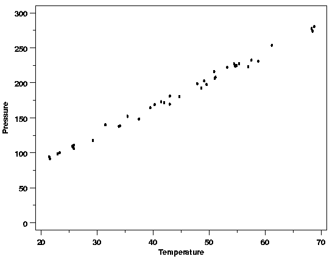
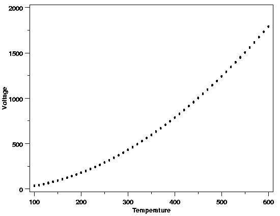
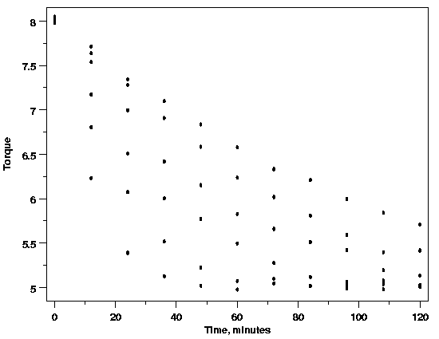
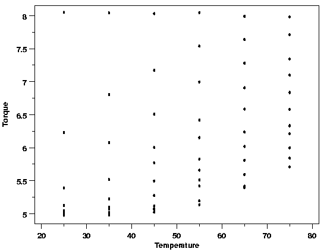
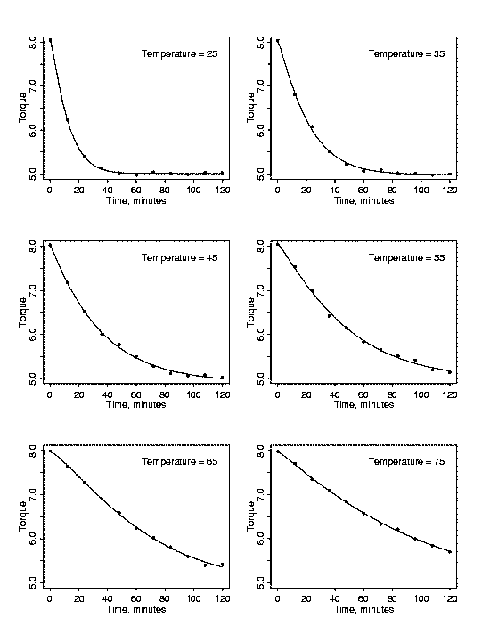
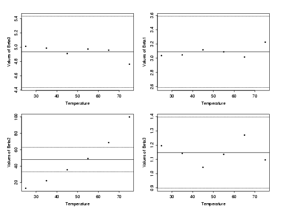

|
4.
Process Modeling
4.4. Data Analysis for Process Modeling 4.4.2. How do I select a function to describe my process?
|
|||
| Plot the Data | The best way to select an initial model is to plot the data. Even if you have a good idea of what the form of the regression function will be, plotting allows a preliminary check of the underlying assumptions required for the model fitting to succeed. Looking at the data also often provides other insights about the process or the methods of data collection that cannot easily be obtained from numerical summaries of the data alone. | ||
| Example | The data from the Pressure/Temperature example is plotted below. From the plot it looks like a straight-line model will fit the data well. This is as expected based on Charles' Law. In this case there are no signs of any problems with the process or data collection. | ||
| Straight-Line Model Looks Appropriate |  | ||
| Start with Least Complex Functions First | A key point when selecting a model is to start with the simplest function that looks as though it will describe the structure in the data. Complex models are fine if required, but they should not be used unnecessarily. Fitting models that are more complex than necessary means that random noise in the data will be modeled as deterministic structure. This will unnecessarily reduce the amount of data available for estimation of the residual standard deviation, potentially increasing the uncertainties of the results obtained when the model is used to answer engineering or scientific questions. Fortunately, many physical systems can be modeled well with straight-line, polynomial, or simple nonlinear functions. | ||
| Quadratic Polynomial a Good Starting Point |  | ||
| Developing Models in Higher Dimensions | When the function describing the deterministic variability in the response variable depends on several predictor (input) variables, it can be difficult to see how the different variables relate to one another. One way to tackle this problem that often proves useful is to plot cross-sections of the data and build up a function one dimension at a time. This approach will often shed more light on the relationships between the different predictor variables and the response than plots that lump different levels of one or more predictor variables together on plots of the response variable versus another predictor variable. | ||
| Polymer Relaxation Example | For example, materials scientists are interested in how cylindrical polymer samples that have been twisted by a fixed amount relax over time. They are also interested in finding out how temperature may affect this process. As a result, both time and temperature are thought to be important factors for describing the systematic variation in the relaxation data plotted below. When the torque is plotted against time, however, the nature of the relationship is not clearly shown. Similarly, when torque is plotted versus the temperature the effect of temperature is also unclear. The difficulty in interpreting these plots arises because the plot of torque versus time includes data for several different temperatures and the plot of torque versus temperature includes data observed at different times. If both temperature and time are necessary parts of the function that describes the data, these plots are collapsing what really should be displayed as a three-dimensional surface onto a two-dimensional plot, muddying the picture of the data. | ||
| Polymer Relaxation Data |  | ||
|  | |||
| Multiplots Reveal Structure | If cross-sections of the data are plotted in multiple plots instead of lumping different explanatory variable values together, the relationships between the variables can become much clearer. Each cross-sectional plot below shows the relationship between torque and time for a particular temperature. Now the relationship between torque and time for each temperature is clear. It is also easy to see that the relationship differs for different temperatures. At a temperature of 25 degrees there is a sharp drop in torque between 0 and 20 minutes and then the relaxation slows. At a temperature of 75 degrees, however, the relaxation drops at a rate that is nearly constant over the whole experimental time period. The fact that the profiles of torque versus time vary with temperature confirms that any functional description of the polymer relaxation process will need to include temperature. | ||
| Cross-Sections of the Data |  | ||
| Cross-Sectional Models Provide Further Insight | Further insight into the appropriate function to use can be obtained by separately modeling each cross-section of the data and then relating the individual models to one another. Fitting the accepted stretched exponential relationship between torque (\(y\)) and time (\(x_1\)), $$ y = \beta_0 + \beta_1\exp\left[-\left(\frac{x_1}{\beta_2}\right)^{\beta_3}\right] + \varepsilon $$ to each cross-section of the polymer data and then examining plots of the estimated parameters versus temperature roughly indicates how temperature should be incorporated into a model of the polymer relaxation data. The individual stretched exponentials fit to each cross-section of the data are shown in the plot above as solid curves through the data. Plots of the estimated values of each of the four parameters in the stretched exponential versus temperature are shown below. | ||
| Cross-Section Parameters vs. Temperature |  | ||
| The solid line near the center of each plot of the cross-sectional parameters from the stretched exponential is the mean of the estimated parameter values across all six levels of temperature. The dashed lines above and below the solid reference line provide approximate bounds on how much the parameter estimates could vary due to random variation in the data. These bounds are based on the typical value of the standard deviations of the estimates from each individual stretched exponential fit. From these plots it is clear that only the values of \(\beta_2\) significantly differ from one another across the temperature range. In addition, there is a clear increasing trend in the parameter estimates for \(\beta_2\). For each of the other parameters, the estimate at each temperature falls within the uncertainty bounds and no clear structure is visible. | |||
| Based on the plot of estimated \(\beta_2\) values above, augmenting the \(\beta_2\) term in the standard stretched exponential so that the new denominator is quadratic in temperature (denoted by \(x_2\)) should provide a good starting model for the polymer relaxation process. The choice of a quadratic in temperature is suggested by the slight curvature in the plot of the individually estimated parameter values. The resulting model is $$ y = \beta_0 + \beta_1\exp \left[ -\left(\frac{x_1}{\beta_2+\beta_4x_2+\beta_5x_2^2)}\right)^{\beta_3}\right] + \varepsilon $$ | |||

{kind=link}
{kind=link}
{kind=link}
{kind=link}
{kind=link}
{kind=link}